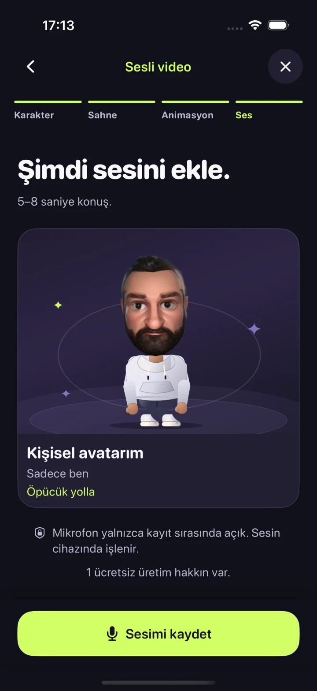
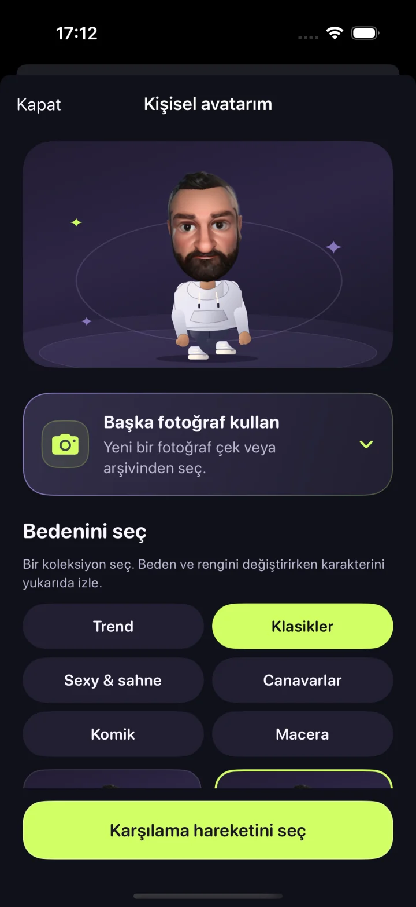
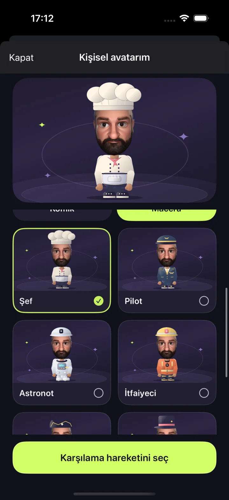
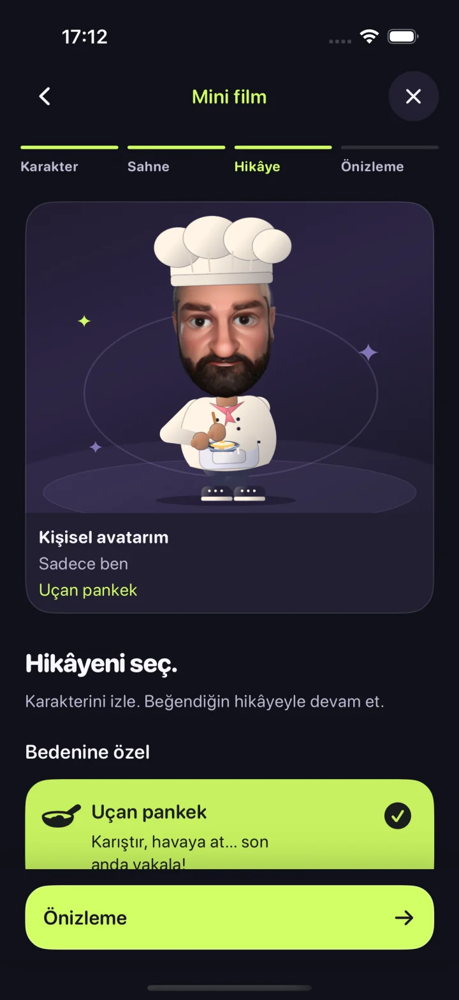
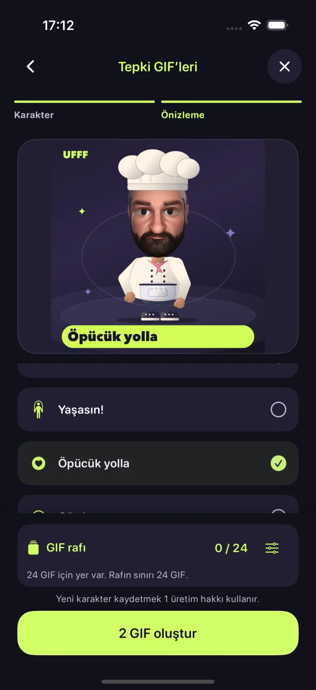
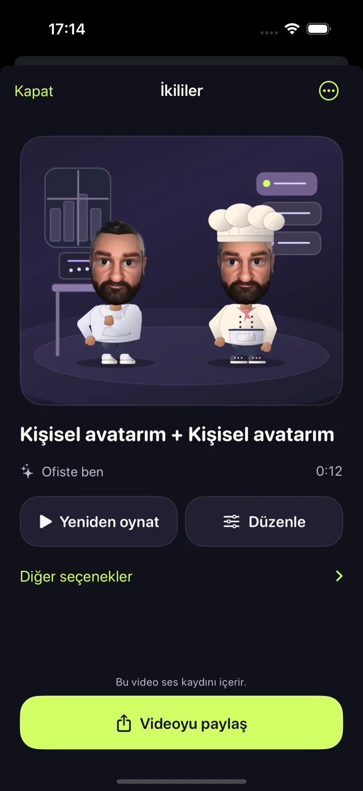

01
Sesli video
Bir cümlene karakter kat. 8 saniyeye kadar kaydet; doğal sesini koru veya hafif ince/kalın efekti dene.
Karakter → Sahne → Hareket → Ses

Kendi küçük çizgi film dünyan
Bir fotoğrafla kendine yeni bir rol ver. Şef ol, sihir yap, bir öpücük gönder. Kendi karakterinle küçük hikâyeler ve kocaman tepkiler yarat.
Bu sayfa yaklaşan 1.1.1 sürümünün yeniliklerini gösterir. App Store’da şu anda 1.0 sunuluyor.

Bir fotoğraf. Bir sürü ihtimal.
Fotoğraf çek veya arşivinden seç. Avatarının bedenini, rengini ve karşılama hareketini canlı önizlemede ayarla. Ana ekranına kaydet; bir sonraki hikâyende yeniden seç.
Gerçek uygulama ekranları. Sonuç, seçtiğin fotoğrafa göre değişir.

Üç farklı yol
En başta formatını seç. Her yol, ihtiyacın olan adımlarla ilerler.
Bir cümlene karakter kat. 8 saniyeye kadar kaydet; doğal sesini koru veya hafif ince/kalın efekti dene.
Karakter → Sahne → Hareket → Ses

Şefin mutfağa girsin, sihirbazın numarasını yapsın. Sahneni ve hikâyeni seç; istersen sesini ekle.
Karakter → Sahne → Hikâye → Önizleme

Bir selam, bir kutlama, dramatik bir tepki. Tüm animasyon koleksiyonundan kendi sessiz GIF paketini seç.
Karakter → Hareketler → GIF paketi


Birlikte oyna
Kayıtlı iki karakterini aynı iPhone’da buluştur. Sahneyi seç, birlikte önizle ve hangi seslerin duyulacağını belirle. Tekli içeriklerin ve duoların kütüphanede ayrı sekmelerde yerini bulsun.
Kutlamak için bir sebep?
Önce tanışın.
Tüm oluşturma formatlarında toplam üç başarılı oluşturma ücretsiz. Sonrasında UFFF Forever ile tek seferlik satın alma: sınırsız yeni içerik.
İptal edilen veya başarısız işlemler hak tüketmez. Güncel fiyat, Apple satın alma ekranında mağaza bölgenin para birimiyle gösterilir.
Satın alma ve haklar ↗Fotoğraf ve ses cihazında işlenir. Hesap, reklam veya bulut AI servisi yok. Paylaşmayı sen seçersin.
Gizliliği keşfet ↗